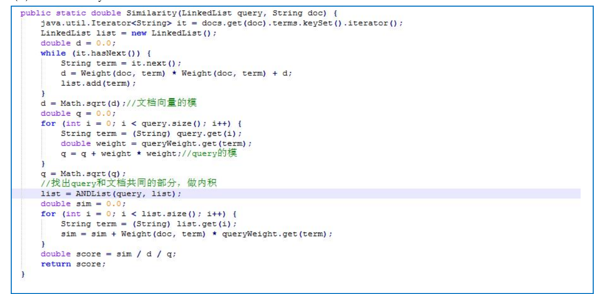
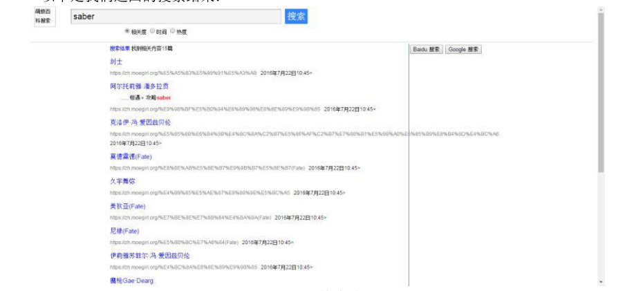
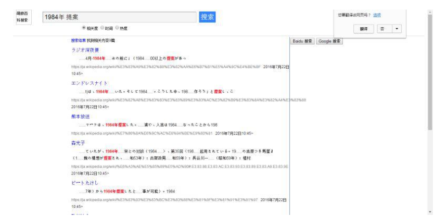
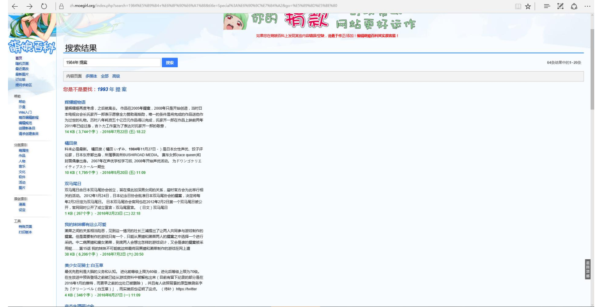

Search engine design for anime otaku
In consideration of fulfilling the basic requirements and practicality, we decided to make a The search engine of the otaku is used as the curriculum design work of the information retrieval and extraction system. We quoted the well-known two-dimensional information website-Moegirlpedia (https://zh.moegirl.org/Mainpage) Database for this test
We searched the content on the Moegirlpedia website and used common animations such as saber The role was used as a key word, and the search was carried out and the return result with practical value was obtained.
Structural analysis: We decompose the task into four parts: Crawling of Moegirlpedia vocabulary explanation item data, inverted index The construction of the vector space model, the realization of the vector space model and the front-end interface of information extraction. It is mainly divided into four modules: web crawler, index building, document scoring, and sorting display. Between module and module It also contains some sub-modules, including: web page information extraction, data storage, text analysis, tf-idf weight calculation, vector Spatial model modeling, relevance ranking, etc.
Web Crawler
The web crawler part uses the Beautiful Soup open source framework. Beautiful Soup is an HTML/XML parser written in Python, which can handle irregularities well Fan tags and generates a parse tree. Usually used to analyze web documents crawled by crawlers. First load the source url (https://zh.moegirl.org/Fate/stay_night) into the URL manager, loop At the beginning, the judgment condition is whether there is a new url in the URL manager. When there is a new url, start crawling; otherwise, Bunch of crawlers. After the crawler starts, it is necessary to download all the page content in the source url with the help of an HTML downloader, and then download The downloaded content is parsed by the HTML parser HtmlParser, and all valid URLs appearing in the body and in the body Contents and titles, and then load these newly acquired urls into the URL manager again to start a new cycle. finally Use the outputer output device to output the obtained data and save it as a json format file. At the same time we are in the crawling process 5 An exception handler is also added. If an exception occurs, a "craw failed" message will be sent to the console to continue with the new download One cycle.
Inverted index construction
Inverted index is an important part of information retrieval. In this module, there are mainly four key steps: from json text Extract news content, news content segmentation, count word frequency and document frequency from the file, calculate tf-idf weight Two HashMaps are used to save the results. HashMap uses lexical items as keys, and the document name, document location and other attributes are values (special Separate by special symbols), one for statistics of each document, and one for statistics of all documents.
Vector space model modeling
Vector space model modeling Vector Space Model (VSM: Vector Space Model) was proposed by Salton et al in the 1970s, and Successfully applied to the famous SMART text retrieval system. Simplify the processing of text content to vector operations in vector space Calculate, and it expresses semantic similarity with spatial similarity, which is intuitive and easy to understand. The concept of VSM is simple. It simplifies the processing of text content to vector operations in vector space, and it uses spatial Similarity expresses semantic similarity, which is intuitive and easy to understand. When the document is represented as a vector of document space, it can be calculated to The similarity between the quantities is used to measure the similarity between the documents. The most commonly used measure of similarity in text processing is cosine distance. M unordered feature items ti, the root/word/phrase/each other document dj can be represented by a feature item vector (A1j, a2j,..., aMj) weight calculation, N training documents AM*N= (aij) document similarity comparison 1) Cosine Calculation, the advantage of cosine calculation is that it happens to be a number between 0 and 1. If the vectors are consistent, it is 1. If the vectors are orthogonal, then It is 0, in line with the characteristics of similarity percentage, the calculation method of cosine is the product of vector inner product/modulus of each vector. 2) Inner product calculation, direct calculation of inner product, the calculation intensity is low, but the error is large.
Document vectorization method: use TF-IDF weight for representation
Search engine front end
The realization of information retrieval is shown in the figure above. The overall idea is that we traverse all indexed documents on the entire website File, record the page that contains the input keywords, then display the context book, highlight the keywords, and Record its url and display it for users to access. Our husband has become a link to the target url, and the content displayed on the page is the inclusive sentence of the keyword. The key word is highlighted. The implementation of highlighting is relatively simple. We only need to modify the starting position and length of the keywords that have been recorded before. The color font is fine. Regarding the display of the text introduced below, we use the keyword itself as the basis to display fixed-length characters before and after it (with The body length will be adjusted according to the number of keywords).
  